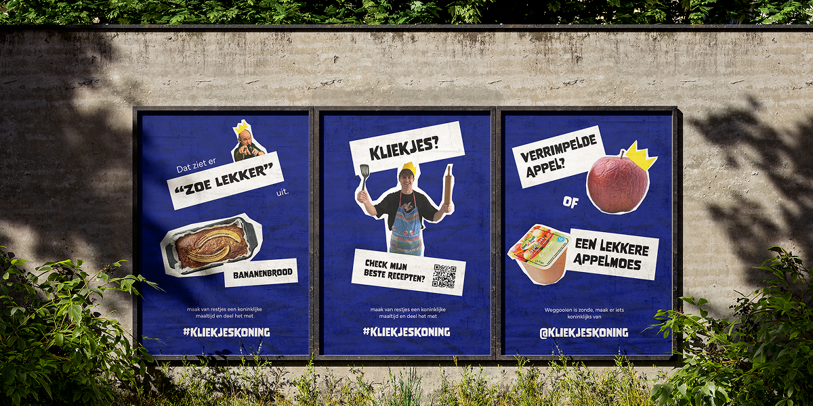
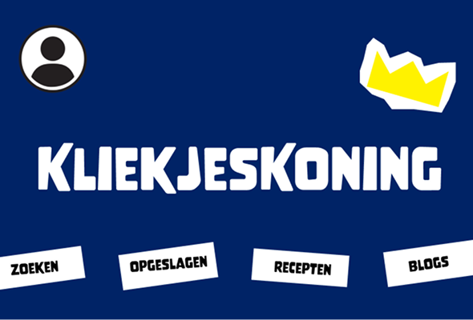

Branding | Designing | Research | Campaign
For this project, I worked with my team to create a campaign that raises awareness about food waste. I was
involved in developing the concept, creating the visual identity, and designing both digital and print
materials, supported by a website. The project brought together research, design, and strategy to create a
clear and engaging campaign.

